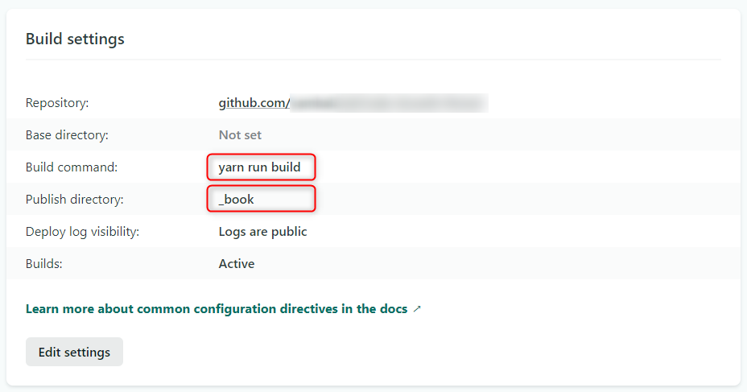
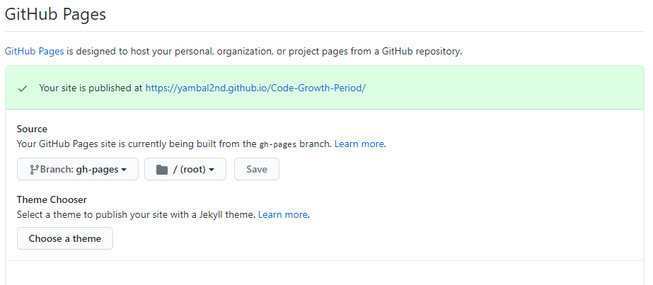

HonKitでビルドしたコンテンツを公開する
Netlify
Netlifyは、静的サイトをホスティングすることができるWebサービスです。GitへのPush（変更）を検知して自動デプロイしてくれます。
つまり、Markdownを編集しPushすると、それをトリガーにビルドが実行され、公開まで自的に行います。
仮に、HonKitのビルドコマンドがyarn run buildで、出力先が_bookならば、Build setting は以下のようになるでしょう。

GitHub Pages
GitHub PagesはGitHubが提供するホスティングサービスで、ウェブページをインターネット上に公開することができます。
とても便利な機能なのですが、公開ディレクトリには/rootと/docsしか選択できません。
対してHonKitの方は/_book固定となっています。
そこでちょっと小細工が必要です。
gh-pagesモジュールを追加
gh-pagesは指定したディレクトリをgh-pagesブランチにPushするというモジュールです
yarn add gh-pages --dev
以下のnpm-run-scriptsの場合、_bookディレクトリをgh-pagesブランチにPushすることになります
"scripts": {
"deploy": "gh-pages -d _book",
}
GitHub Pagesの設定は以下のようになるでしょう 